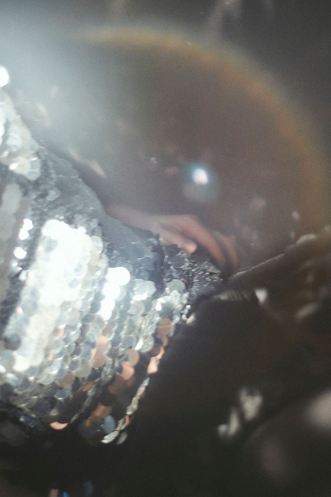
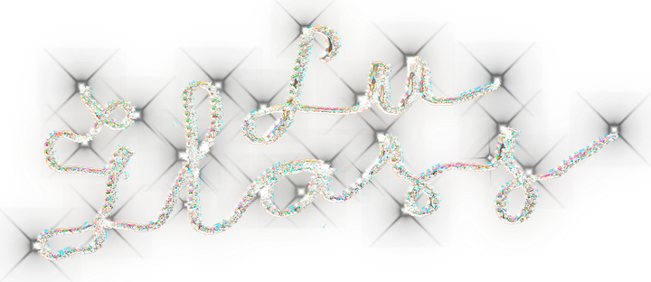
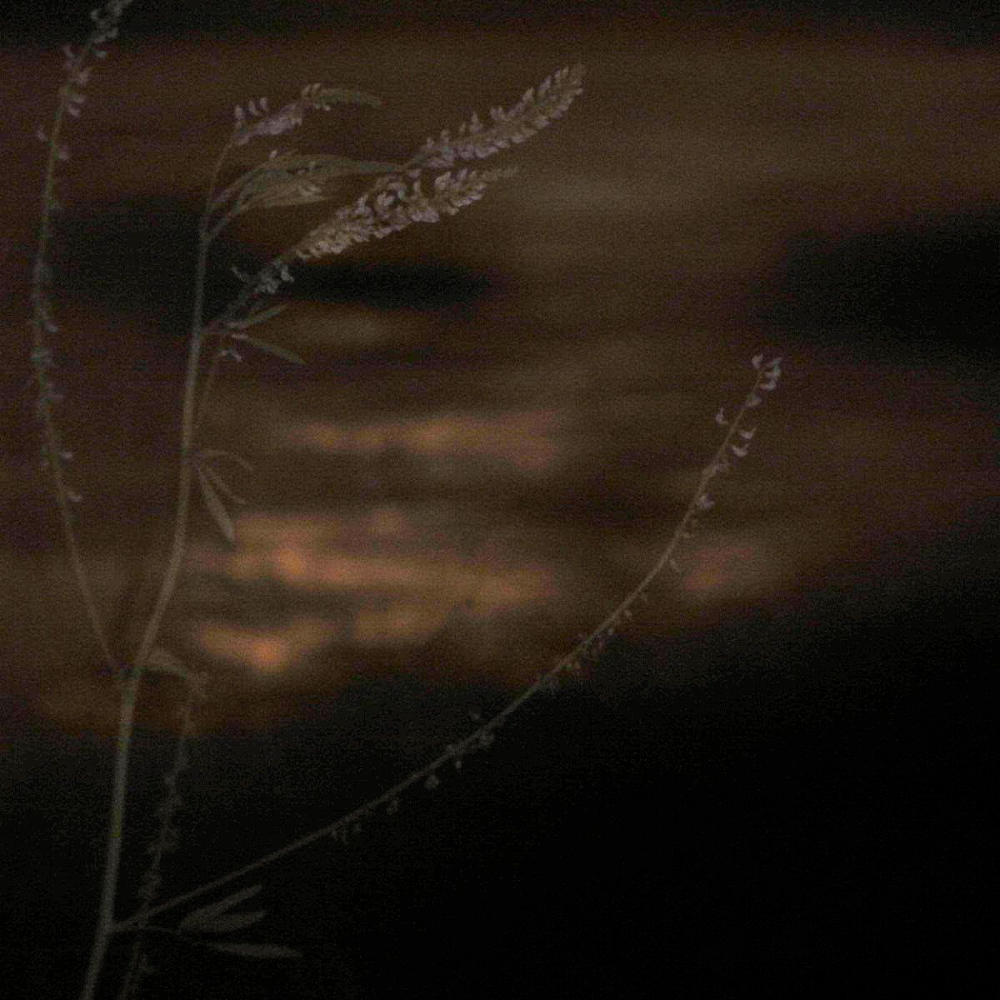
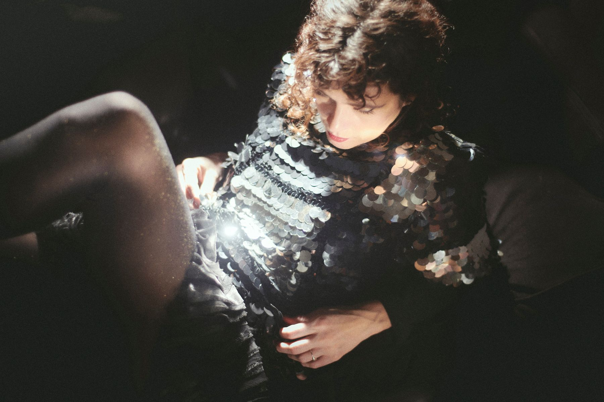

Pop melancólico y psicodélico, sintetizadores de los 80 y 90 y letras de corazón roto.
La música pop melancólica y psicodélica de Lu Glass, compuesta principalmente con sintetizadores híbridos analógico-digitales de los 80 y 90, se estructura en canciones con paisajes instrumentales y líricas de tópicos literarios y de corazón roto.
En su formación actual, el proyecto adquiere fuerza electrónica con la incorporación de Paula Díaz Mendilharzu y su setup de Roland TD-03, MPC, módulo JV 1080 y Minilogue.

Disco nuevo · Puddle Label

Trayectoria
Lu Glass lanzó su primer disco, El Rayo, en 2016, donde plasmó su identidad sonora en capas de oníricos sintetizadores, beats minimalistas y letras precisas. Junto a la banda que convocó para tocar en vivo grabó un EP de covers y telonearon a The Radio Dept.
Después de años de presentarse en escenarios locales e internacionales, entre los que se destaca su actuación en la primera edición en Buenos Aires del festival Primavera Sound, produjo En la ribera de la noche plutónica.
Agenda
Pronto nuevas fechas.
Shows, festivales, ciclos y prensa.
Lu Glass · Synth pop